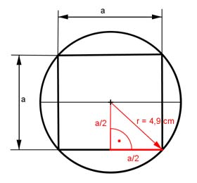

Aufgabe 208 Aus einem Kegel mit einem Grundkreisradius r = 4,9 cm und einer Höhe h von 13,2 cm soll die größte quadratische Pyramide gleicher Höhe gefertigt werden. Wie groß ist der Abfall A?  Satz von Pythagoras in dem roten Dreieck: r² = (a/2)² + (a/2)² a² a² r² = ---- + ---- 4 4 a² r² = ---- |*2 2 a² = 2 * r² = 2 * 4,9² cm² = 48,02 cm² |√ a = 6,93 cm л * r² * h л * 4,9² cm² * 13,2 cm VKegel = ------------- = ------------------------- = 331,7 cm³ 3 3 a² * h 6,93² cm² * 13,2 cm VPyramide = ---------- = ---------------------- = 211,3 cm³ 3 3 A = VKegel - VPyramide = 331,7 cm³ - 211,3 cm³ = 120,4 cm³